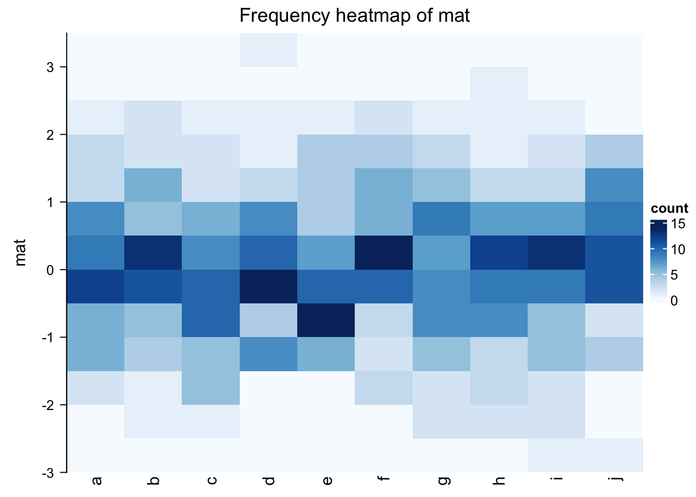
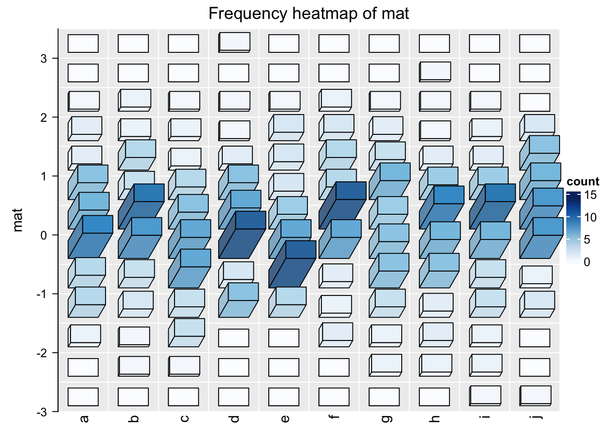
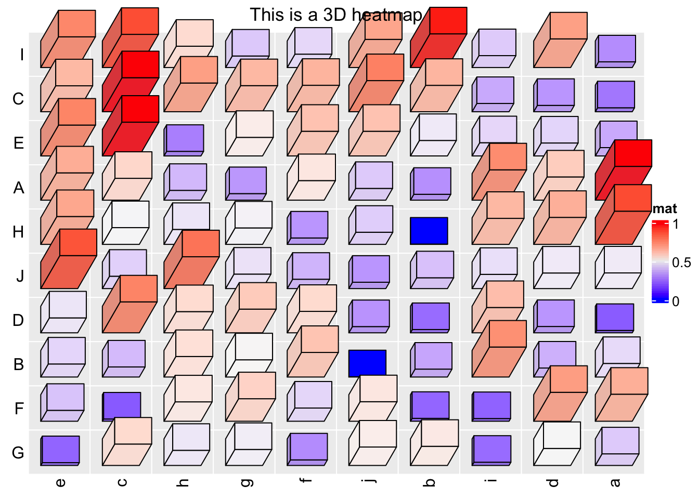
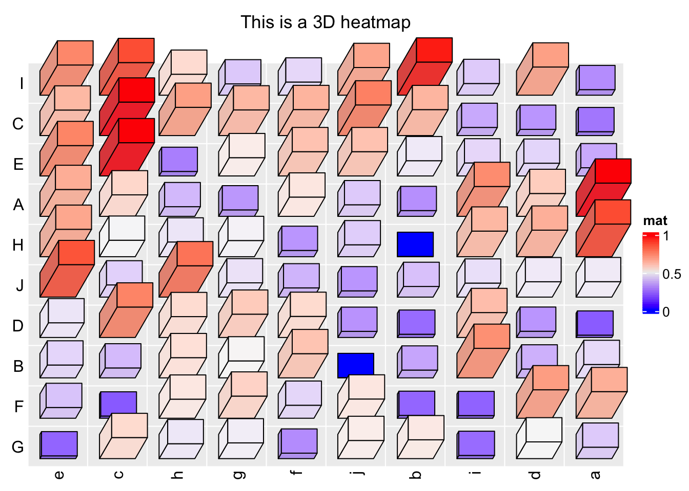
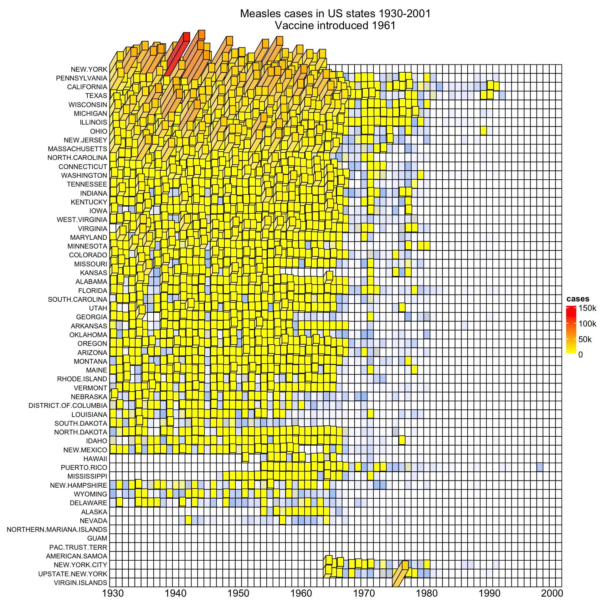

Chapter 12 Three-dimensional ComplexHeatmap {#3d-heatmap}
12.1 Motivation
ComplexHeatmap has a densityHeatmap() to visualize a list of density
distributions, such as in the following example:
library(ComplexHeatmap)
set.seed(123)
mat = matrix(rnorm(500), ncol = 10)
colnames(mat) = letters[1:10]
densityHeatmap(mat)
In basic R graphics, since distributions can also be visualized by histograms, from ComplexHeatmap
version 2.7.9, I added a new function frequencyHeatmap() which is like a histogram-version
of density heatmap. The usage is similar as densityHeatmap():
frequencyHeatmap(mat)
In the previous example, the frequency matrix is visualized as a heatmap. Note you can use different statistic
in frequencyHeatmap(), i.e., "count", "proportion" or "density".
Well, the frequency heatmap claims to be a histogram-version of density heatmap, but it does not
look like histograms at all. Maybe a 3D heatmap with 3D bars is more proper.
This can be done by setting argument use_3d = TRUE in frequencyHeatmap().
frequencyHeatmap(mat, use_3d = TRUE)
This looks nicer! In the next section I will explain how the 3D Heatmap is implemented.
12.2 Implementation of 3D heatmap
First, we need to draw 3D bars. This can be done by the new function bar3D(). The usage is as follows:
bar3D(x = 0.5, y = 0.5, w = 0.2, h = 0.2, l = unit(1, "cm"), theta = 60)
The arguments are:
x: x coordinate of the center point in the bottom face. Value should be aunitobject. If it is numeric, the default unit isnpc.y: y coordinate of the center point in the bottom face.w: Width of the bar (in the x direction). See the following figure.h: Height of the bar (in the y direction). See the following figure.l: Length of the bar (in the z direction). See the following figure.theta: Angle for the projection. See the following figure. Notethetacan only take value between 0 and 90.

fill argument sets the color. To enhance the visual effect of 3D visualization, the three faces actually have slighly different brightness.
bar3D(x = seq(0.2, 0.8, length = 4), y = 0.5, w = unit(5, "mm"), h = unit(5, "mm"),
l = unit(1, "cm"), fill = c("red", "green", "blue", "purple"))theta argument sets the angle of the projection. Since I am a right-hand
person, my left hand is more free so that it feels like it’s giving invisible
force to push the bars to the right, thus, theta can only take value between
0 and 90. :)
bar3D(x = seq(0.2, 0.8, length = 4), y = 0.5, w = unit(5, "mm"), h = unit(5, "mm"),
l = unit(1, "cm"), theta = c(20, 40, 60, 80))To add bars to heatmap cells, we can simply implement bar3D() in cell_fun
or layer_fun where we add each bar to each cell. Here we have a new function
Heatmap3D() which simplifies this. Heatmap3D() accepts almost all the arguments
in Heatmap() and the only difference is each cell has a 3D bar of which the
height corresponds to its value.
Heatmap3D() only allows non-negative matrix as input. Also default values
are changes for some arguments, such as row names are put on the left side of heatmap,
and clusterings are still applied but the dendrograms are not drawn by default.
Following is a demonstration of the usage of Heatmap3D():
set.seed(7)
mat = matrix(runif(100), 10)
rownames(mat) = LETTERS[1:10]
colnames(mat) = letters[1:10]
Heatmap3D(mat, name = "mat", column_title = "This is a 3D heatmap")
In the previous example, if bars close to the top of the heatmap or to the right of the heatmap have too large length, they will overlap to the heatmap title or the legend, in this case, we need to manually adjust the space between, e.g., title and the heatmap body.
In ComplexHeatmap, there are several global options that control the
spaces between heatmap components. To solve the problem in the previous example,
we can manually set a proper value for ht_opt$HEATMAP_LEGEND_PADDING and
ht_opt$TITLE_PADDING.
ht_opt$HEATMAP_LEGEND_PADDING = unit(5, "mm")
ht_opt$TITLE_PADDING = unit(c(9, 2), "mm") # bottom and top padding
Heatmap3D(mat, name = "mat", column_title = "This is a 3D heatmap")
Reset the global options by ht_opt(RESET = TRUE):
ht_opt(RESET = TRUE)Next I demonstrate another example which is applied to the well-known measles vaccine dataset. First I show the “normal 2D heatmap.” Code for generating the heatmap can be found here.

To change it to 3D visualization, simply replace Heatmap() with
Heatmap3D() and most of the original arguments for Heatmap() can still be
put there. For simplicity, in the 3D heatmap, I removed the top annotation and
the right annotation.
mat = readRDS(system.file("extdata", "measles.rds", package = "ComplexHeatmap"))
year_text = as.numeric(colnames(mat))
year_text[year_text %% 10 != 0] = ""
ha_column = HeatmapAnnotation(
year = anno_text(year_text, rot = 0, location = unit(1, "npc"), just = "top")
)
col_fun = circlize::colorRamp2(c(0, 800, 1000, 127000), c("white", "cornflowerblue", "yellow", "red"))
ht_opt$TITLE_PADDING = unit(c(15, 2), "mm")
Heatmap3D(mat, name = "cases", col = col_fun,
cluster_columns = FALSE, show_row_dend = FALSE,
show_column_names = FALSE,
row_names_side = "left", row_names_gp = gpar(fontsize = 8),
column_title = 'Measles cases in US states 1930-2001\nVaccine introduced 1961',
bottom_annotation = ha_column,
heatmap_legend_param = list(at = c(0, 5e4, 1e5, 1.5e5),
labels = c("0", "50k", "100k", "150k")),
# new arguments for Heatmap3D()
bar_rel_width = 1, bar_rel_height = 1, bar_max_length = unit(2, "cm")
)
By the way, it is also possible to turn the static 3D heatmap to an interactive Shiny application by package InteractiveComplexHeatmap. See the following figure:

Heatmap3D() can do a lot of things that are the same as Heatmap(), such as adding
annotations, splitting the heatmap or concatenating more heatmaps by +/%v%. But since 3D
visualization is in general not a good idea and it actually won’t give you
more information than what you can get from 2D visualization, thus, if you
want to use Heatmap3D(), you better keep it as simple as possible. Also, please
apply it to small matrices, it will take long time to generate for large matrices.